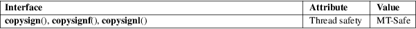

copysign, copysignf, copysignl − copy sign of a number
Math library (libm, −lm)
#include <math.h>
double
copysign(double x, double y);
float copysignf(float x, float
y);
long double copysignl(long double x, long
double y);
Feature Test Macro Requirements for glibc (see feature_test_macros(7)):
copysign(),
copysignf(), copysignl():
_ISOC99_SOURCE || _POSIX_C_SOURCE >= 200112L
|| /* Since glibc 2.19: */ _DEFAULT_SOURCE
|| /* glibc <= 2.19: */ _BSD_SOURCE || _SVID_SOURCE
These functions return a value whose absolute value matches that of x, but whose sign bit matches that of y.
For example, copysign(42.0, −1.0) and copysign(−42.0, −1.0) both return −42.0.
On success, these functions return a value whose magnitude is taken from x and whose sign is taken from y.
If x is a NaN, a NaN with the sign bit of y is returned.
No errors occur.
For an explanation of the terms used in this section, see attributes(7).

On architectures where the floating-point formats are not IEEE 754 compliant, these functions may treat a negative zero as positive.
C11, POSIX.1-2008.
This function is defined in IEC 559 (and the appendix with recommended functions in IEEE 754/IEEE 854).
C99, POSIX.1-2001, 4.3BSD.
signbit(3)